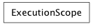
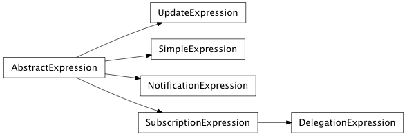
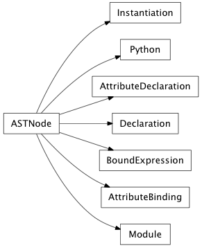

The enaml.core package contains all of the core functionality of the Enaml toolkit.
Bases: tuple
EnamlFileInfo(src_path, cache_path, cache_dir)
Return self as a plain tuple. Used by copy and pickle.
Create new instance of EnamlFileInfo(src_path, cache_path, cache_dir)
Return a nicely formatted representation string
Alias for field number 2
Alias for field number 1
Alias for field number 0
Create an EnamlFileInfo object for the given src_path.
| Parameters: | src_path (string) – The full path to the .enaml file. |
|---|---|
| Returns: | result (FileInfo) – A properly populated EnamlFileInfo object. |
Bases: object
An abstract base class which defines the api required to implement an Enaml importer.
alias of ABCMeta
Finds the given Enaml module and returns an importer, or None if the module is not found.
Loads and returns the Python module for the given enaml path. If a module already exisist in sys.path, the existing module is reused, otherwise a new one is created.
Searches for the given Enaml module and returns an instance of AbstractEnamlImporter on success.
Paramters
| Returns: | result (Instance(AbstractEnamlImporter) or None) – If the Enaml module is located an instance of the importer that will perform the rest of the operations is returned. Otherwise, returns None. |
|---|
Loads and returns the code object for the Enaml module and the full path to the module for use as the __file__ attribute of the module.
| Returns: | result ((code, path)) – The Python code object for the .enaml module, and the full path to the module as a string. |
|---|
list of weak references to the object (if defined)
Bases: enaml.core.import_hooks.AbstractEnamlImporter
The standard Enaml importer which can import Enaml modules from standard locations on the python path and compile them appropriately to .enamlc files.
This importer adopts the Python 3 conventions and scheme for creating the cached files and setting the __file__ attribute on the module. See this discussion thread for more info: http://www.mail-archive.com/python-dev@python.org/msg45203.html
Searches for the given Enaml module and returns an instance of this class on success.
Paramters
| Returns: | results (Instance(AbstractEnamlImporter) or None) – If the Enaml module is located an instance of the importer that will perform the rest of the operations is returned. Otherwise, returns None. |
|---|
Bases: object
A context manager that hooks/unhooks the enaml meta path importer for the duration of the block. The helps user avoid unintended consequences of a having a meta path importer slow down all of their other imports.
Returns a tuple of currently active importers in use for the framework.
Add an importer to the list of importers for use with the framework. It must be a subclass of AbstractEnamlImporter. The most recently appended importer is used first. If the importer has already been added, this is a no-op. To move an importer up in precedence, remove it and add it again.
Removes the importer from the list of active importers. If the importer is not in the list, this is a no-op.
list of weak references to the object (if defined)


Swap an attribute of an object with the given value for the duration of the context, restoring it on exit. The attribute must already exist on the object prior to entering the context.
| Parameters: |
|---|
Bases: object
A custom mapping object that implements the scope resolution order for the evaluation of code objects in Enaml expressions.
Note
Strong references are kept to all objects passed to the constructor, so these scope objects should be created as needed and discarded in order to avoid issues with reference cycles.
Initialize an execution scope.
| Parameters: |
|
|---|
Lookup an item from the namespace.
Returns the named item from the namespace according to the following precedence rules:
- assignments
- override
- identifiers
- implicit attrs
- f_globals
- toolkit
- builtins
| Parameters: | name (string) – The name that should be looked up in the namespace. |
|---|---|
| Returns: | result (object) – The value associated with the name, if found. |
| Raises : |
list of weak references to the object (if defined)
Bases: object
An object which implements implicit attribute scoping starting at a given object in the tree. It is used in conjuction with a nonlocals() instance to allow for explicit referencing of values which would otherwise be implicitly scoped.
Initialize a nonlocal scope.
| Parameters: |
|
|---|
Returns a new nonlocal scope object offset the given number of levels in the hierarchy.
| Parameters: | level (int, optional) – The number of levels up the tree to offset. The default is zero and indicates no offset. The level must be >= 0. |
|---|
A convenience method which allows accessing items in the scope via getattr instead of getitem.
A convenience method which allows setting items in the scope via setattr instead of setitem.
Returns the named item beginning at the current scope object and progressing up the tree until the named attribute is found. A KeyError is raised if the attribute is not found.
Sets the value of the scope by beginning at the current scope object and progressing up the tree until the named attribute is found. A KeyError is raise in the attribute is not found.
list of weak references to the object (if defined)
Bases: object
The base abstract expression class which defines the base api for Expression handlers. These objects are typically created by the Enaml operators.
alias of ABCMeta
A signal which is emitted when the expression has changed. It is emmitted with three arguments: expression, name, and value; where expression is the instance which emitted the signal, name is the attribute name to which the expression is bound, and value is the computed value of the expression.
Initializes and expression object.
| Parameters: |
|
|---|
Evaluates the expression and returns the result. If an expression does not provide (or cannot provide) a value, it should return NotImplemented.
| Returns: | result (object or NotImplemented) – The result of evaluating the expression or NotImplemented if the expression is unable to provide a value. |
|---|
A method called by the owner component when the trait on which it is bound has changed.
| Parameters: |
|---|
list of weak references to the object (if defined)
Bases: enaml.core.expressions.AbstractExpression
A concrete implementation of AbstractEvalExpression. An instance of SimpleExpression does not track changes in the expression or emit the expression_changed signal. Is also does not support notification.
Bases: enaml.core.expressions.AbstractExpression
A concrete implementation of AbstractExpression. An instance of NotificationExpression does not support evaluation and does not emit the expression_changed signal, but it does support notification. An ‘event’ object will be added to the scope of the expression which will contain information about the trait change.
Bases: tuple
A namedtuple which is used to pass arguments to the expression.
Return self as a plain tuple. Used by copy and pickle.
Create new instance of event(obj, name, old, new)
Return a nicely formatted representation string
Alias for field number 1
Alias for field number 3
Alias for field number 0
Alias for field number 2
Bases: enaml.core.expressions.AbstractExpression
A concrete implementation of AbstractExpression which sets the value on the contituents of the expression according to any provided inverters.
Initialize an UpdateExpression
| Parameters: | inverter_classes (iterable of AbstractInverter subclasses) – An iterable of concrete AbstractInverter subclasses which will invert the given expression code into a mirrored operation which sets the value on the appropriate object. |
|---|
Bases: enaml.core.expressions.AbstractExpression
A concrete implementation of AbstractExpression. An instance of SubcriptionExpression emits the expression_changed signal when the value of the underlying expression changes. It does not support notification.
Initialize a SubscriptionExpression
| Parameters: | monitor_classes (iterable of AbstractMonitor subclasses) – An iterable of AbstractMonitor subclasses which will be used to generating the monitoring code for the expression. |
|---|
Bases: enaml.core.expressions.SubscriptionExpression
A SubscriptionExpression subclass that adds notification support by setting the value on the contituents of the expression according to any provide inverters.
Initialize a DelegationExpression
| Parameters: | inverter_classes (iterable of AbstractInverter subclasses) – An iterable of concrete AbstractInverter subclasses which will invert the given expression code into a mirrored operation which sets the value on the appropriate object. |
|---|
Bases: object
An abstract model for supplying information to heierarchical widgets.
alias of ABCMeta
Fired by the begin_insert_columns method
Fired by the begin_move_columns method
Fired by the begin_remove_columns method
Fired by the end_insert_columns method
Fired by the end_move_columns method
Fired by the end_remove_rows method
Fired by the begin_insert_rows method
Fired by the begin_move_rows method
Fired by the begin_remove_columns method
Fired by the end_insert_rows method
Fired by the end_move_rows method
Fired by the end_remove_rows method
Fired by the begin_change_layout method
Fired by the end_change_layout method
Fired by the begin_reset_model method
Fired by the end_reset_model method
Fired by the notify_data_changed method
Fired by the notify_horizontal_header_data_changed method
Fired by the notify_vertical_header_data_changed method
Begins inserting a column.
This method must be called before inserting data into the model.
| Parameters: |
|---|
Begins to move a column.
| Parameters: |
|
|---|
Begins to remove columns.
This method must be called before removing data from the model.
| Parameters: |
|---|
Finish inserting columns.
This method must be called after inserting data into the model.
| Parameters: |
|---|
Finish moving columns.
This method must be called after moving data in a model.
| Parameters: |
|
|---|
Finish removing columns.
This method must be called after removing data from a model.
| Parameters: |
|---|
Begins a row insertion.
This method must be called before inserting data into the model.
| Parameters: |
|---|
Begins to move a row.
| Parameters: |
|
|---|
Begins to remove rows.
This method must be called before removing data from the model.
| Parameters: |
|---|
Finish inserting rows.
This method must be called after inserting data into the model.
| Parameters: |
|---|
Finish moving rows
This method must be called after moving data in a model.
| Parameters: |
|
|---|
Finish removing rows.
This method must be called after moving data in a model.
| Parameters: |
|---|
Begin a change to the layout of the model – e.g., sort it.
This method must be called before rearranging data in a model.
Finish a change to the layout of the model.
This method must be called after rearranging data in a model.
Begin to reset a model.
Model indices must be recomputed, and any associated views will also be reset.
This method must be called before a model is reset.
Finish resetting a model.
This method must be called after a model is reset.
Create a notification event for the model data has changed.
| Parameters: |
|
|---|
Create a notification that model horizontal header data has changed.
| Parameters: |
|---|
Create a notification that model vertical header data has changed.
| Parameters: |
|---|
Obtain an item with the same parent as index.
| Parameters: | |
|---|---|
| Returns: | index (ModelIndex) – An element with the same parent as the specified item. |
Refers the caller to an item in the model to edit.
Each item is its own buddy by default, but this is not required.
| Parameters: | index (ModelIndex) – The model index for which the buddy index should be returned for editing. |
|---|---|
| Returns: | buddy (ModelIndex) – The item that should be edited. |
Returns True if items of parent can provide more data.
| Parameters: | parent (ModelIndex or None) – A model index, possibly with more data that can be fetched. |
|---|---|
| Returns: | has_more (bool) – True if more data is available, False otherwise. |
Obtain data from model items, if more is available.
This method is useful when incrementally adding data to a model.
| Parameters: | parent (ModelIndex or None) – An index to query. |
|---|---|
| Returns: | data (AbstractItemModel) – Data that has yet to be received. |
Determine whether this model can provide a valid index with certain specifications.
| Parameters: | |
|---|---|
| Returns: | result (bool) – True if the inputs produce a valid index, False otherwise. |
Determines if an index has any child items.
| Parameters: | parent (ModelIndex or None) – A model index to check for children. |
|---|---|
| Returns: | result (bool) – True if the index has children, False otherwise. |
Create a new index into this model.
| Parameters: | |
|---|---|
| Returns: | index (ModelIndex) – A new index into this model. |
Obtain the flags that specify user interaction with items.
| Parameters: | index (ModelIndex) – Items to query. |
|---|---|
| Returns: | item_flags (tuple of strings) – The ways in which a view can interact with the items. |
Count the number of columns in the children of an item.
| Parameters: | parent (ModelIndex or None) – A model item with children. |
|---|---|
| Returns: | count (int) – The number of columns in the model. |
Count the number of rows in the children of an item.
| Parameters: | parent (ModelIndex or None) – A model item with children. |
|---|---|
| Returns: | count (int) – The number of rows in the model. |
Obtain an index coresponding to an item in the model.
| Parameters: | |
|---|---|
| Returns: | item (ModelIndex or None) – An index for the specified item. |
Obtain the parent of a model item.
| Parameters: | index (ModelIndex) – A model item, possibly with a valid parent. |
|---|---|
| Returns: | index (ModelIndex) – An index for the parent item. |
Get the data for a model index as a string for display.
| Parameters: | index (ModelIndex) – The model index for which to return the data. |
|---|---|
| Returns: | value (string) – The data as a string for display. |
Return an icon for the index
The default implementation returns None.
| Parameters: | index (ModelIndex) – The model index for which to return the icon. |
|---|---|
| Returns: | value (icon??) – The icon to display for the cell. |
Get the data for a model index as a string for editing.
The default implementation returns ‘data(index)’.
| Parameters: | index (ModelIndex) – The model index for which to return the data. |
|---|---|
| Returns: | value (string) – The data as a string for editing. |
Get the tool tip string for a given model index.
The default implementation returns None.
| Parameters: | index (ModelIndex) – The model index for which to return the tool tip. |
|---|---|
| Returns: | value (string) – The tool tip string. |
Get the status tip string for a given model index.
The default implementation returns None.
| Parameters: | index (ModelIndex) – The model index for which to return the status tip. |
|---|---|
| Returns: | value (string) – The status tip string. |
Get the what’s this? string for a given model index.
The default implementation returns None.
| Parameters: | index (ModelIndex) – The model index for which to return the what’s this? string. |
|---|---|
| Returns: | value (string) – The what’s this? string. |
Get the font for a given model index.
The default implementation returns None.
| Parameters: | index (ModelIndex) – The model index for which to return the font. |
|---|---|
| Returns: | value (Font) – The font to use for this model index. |
Get the alignment of the text for a given model index.
The default implementation returns ALIGN_VCENTER | ALIGN_RIGHT
| Parameters: | index (ModelIndex) – The model index for which to return the alignment. |
|---|---|
| Returns: | value (int) – The OR’d alignment flags to use for the given model index. |
The background brush to use for the given index.
The default implementation returns None.
| Parameters: | index (ModelIndex) – The model index for which to return the brush. |
|---|---|
| Returns: | value (Brush) – The brush to use for the given model index. |
The foreground brush to use for the given index.
The default implementation returns None.
| Parameters: | index (ModelIndex) – The model index for which to return the brush. |
|---|---|
| Returns: | value (Brush) – The brush to use for the given model index. |
Get the check state for the given index.
The default implementation returns None.
| Parameters: | index (ModelIndex) – The model index for which to return the check state. |
|---|---|
| Returns: | value (string) – The check state to use for the given model index. |
Get the (width, height) size hint for the given index.
The default implementation returns None.
| Parameters: | index (ModelIndex) – The model index for which to return the size hint. |
|---|---|
| Returns: | value ((width, height)) – The size hint to use for the given model index. |
Update a model item’s data. The default implementation does nothing and returns False.
Implementations that allow editing must set the ‘editable’ flag to True, and call notify_data_changed(...) explicity in order for the table to update.
| Parameters: |
|
|---|---|
| Returns: | success (bool) – True if the data was successfully set, False otherwise. |
Update a model item’s check state. The default implementation does nothing and returns False.
Implementations that allow editing must set the ‘editable’ flag to True, and call notify_data_changed(...) explicity in order for the table to update.
| Parameters: |
|
|---|---|
| Returns: | success (bool) – True if the data was successfully set, False otherwise. |
Get the horizontal label for a particular header section.
The default implementation returns the column number of the given header. Subclasses should override this method to return appropriate data for their model.
| Parameters: | section (int) – The column number of the header. |
|---|---|
| Returns: | data (string) – The requested header label |
Get the vertical label for a particular header section.
The default implementation returns the row number of the given header. Subclasses should override this method to return appropriate data for their model.
| Parameters: | section (int) – The row number of the header. |
|---|---|
| Returns: | data (string) – The requested header label |
Get the horizontal icon for a particular header section.
The default implementation returns None.
| Parameters: | section (int) – The column number of the header. |
|---|---|
| Returns: | data (icon??) – The requested icon for the header |
Get the vertical icon for a particular header section.
The default implementation returns None.
| Parameters: | section (int) – The row number of the header. |
|---|---|
| Returns: | data (icon??) – The requested icon for the header |
Get the horizontal tool tip for a particular header section.
The default implementation returns None.
| Parameters: | section (int) – The column number of the header. |
|---|---|
| Returns: | data (string) – The requested tool tip for the header |
Get the vertical tool tip for a particular header section.
The default implementation returns None.
| Parameters: | section (int) – The row number of the header. |
|---|---|
| Returns: | data (string) – The requested tool tip for the header |
Get the horizontal status tip for a particular header section.
The default implementation returns None.
| Parameters: | section (int) – The column number of the header. |
|---|---|
| Returns: | data (string) – The requested status tip for the header |
Get the vertical status tip for a particular header section.
The default implementation returns None.
| Parameters: | section (int) – The row number of the header. |
|---|---|
| Returns: | data (string) – The requested status tip for the header |
Get the horizontal whats this for a particular header section.
The default implementation returns None.
| Parameters: | section (int) – The column number of the header. |
|---|---|
| Returns: | data (string) – The requested what’s this? for the header |
Get the vertical whats this for a particular header section.
The default implementation returns None.
| Parameters: | section (int) – The row number of the header. |
|---|---|
| Returns: | data (string) – The requested what’s this? for the header |
Get the horizontal font for a particular header section.
The default implementation returns None.
| Parameters: | section (int) – The column number of the header. |
|---|---|
| Returns: | data (Font()) – The requested font for the header |
Get the vertical font for a particular header section.
The default implementation returns None.
| Parameters: | section (int) – The row number of the header. |
|---|---|
| Returns: | data (Font()) – The requested font for the header |
Get the horizontal whats this for a particular header section.
The default implementation returns ALIGN_CENTER.
| Parameters: | section (int) – The column number of the header. |
|---|---|
| Returns: | data (int) – The OR’d alignment flags for the header |
Get the vertical whats this for a particular header section.
The default implementation returns ALIGN_CENTER
| Parameters: | section (int) – The row number of the header. |
|---|---|
| Returns: | data (int) – The OR’d alignment flags for the header |
Get the horizontal background brush for a particular header section.
The default implementation returns None.
| Parameters: | section (int) – The column number of the header. |
|---|---|
| Returns: | data (Brush()) – The requested brush for the header |
Get the vertical background brush for a particular header section.
The default implementation returns None.
| Parameters: | section (int) – The row number of the header. |
|---|---|
| Returns: | data (Brush()) – The requested brush for the header |
Get the horizontal foreground brush for a particular header section.
The default implementation returns None.
| Parameters: | section (int) – The column number of the header. |
|---|---|
| Returns: | data (Brush()) – The requested brush for the header |
Get the vertical foreground brush for a particular header section.
The default implementation returns None.
| Parameters: | section (int) – The row number of the header. |
|---|---|
| Returns: | data (Brush()) – The requested brush for the header |
Get the size hint for a particular horizontal header section.
The default implementation returns None.
| Parameters: | section (int) – The column number of the header. |
|---|---|
| Returns: | value ((width, height)) – The size hint to use for the given column number. |
Get the size hint for a particular vertical header section.
The default implementation returns None.
| Parameters: | section (int) – The row number of the header. |
|---|---|
| Returns: | value ((width, height)) – The size hint to use for the given row number. |
list of weak references to the object (if defined)
Bases: enaml.core.item_model.AbstractItemModel
An AbstractItemModel subclass that implements the methods necessary to restrict the model to a 2-dimensional table of data.
Abstract method implementation that will create a valid model index for the given row and column if they are valid. Otherwise, returns an invalid index.
Bases: enaml.core.item_model.AbstractItemModel
An AbstractItemModel subclass that implements the methods necessary to restrict the model to a 1-dimensional list of data.
Abstract method implementation that will create a valid model index for the given row and column if they are valid. Otherwise, returns an invalid index.
Abstract method implementation that always returns an invalid index, forcing the model to be flat.
Bases: tuple
ModelIndexes are used to navigate an AbstractItemModel.
A ModelIndex is a lightweight object and should be created on the fly, rather than attempting some form of caching. The user will not normally need to create indexes manually. Instead, use the create_index method on an AbstractItemModel.
Construct a model index.
| Parameters: |
|
|---|
Returns the sibling ModelIndex of this index for the given row and column indexes.

Bases: object
The base Enaml AST node.
The line number in the source code that created this node.
list of weak references to the object (if defined)
Bases: enaml.core.enaml_ast.ASTNode
An AST node representing an Enaml module.
The module’s documentation string.
A list of ast nodes comprising the body of the module.
Bases: enaml.core.enaml_ast.ASTNode
An AST node representing a chunk of pure Python code.
A Python ast node.
Bases: enaml.core.enaml_ast.ASTNode
An AST node representing an Enaml declaration.
The name of the declaration.
A Python node which represents the base type of the declaration.
The local identifier to use for instances of the declaration.
The documentation string for the declaration.
A list of AST nodes that comprise the body of the declaration.
Bases: enaml.core.enaml_ast.ASTNode
An AST node representing a declaration instantiation.
The name of declaration being instantiated.
The local identifier to use for the new instance.
A list of AST nodes which comprise the instantiation body.
Bases: enaml.core.enaml_ast.ASTNode
An AST node which represents an attribute declaration.
The name of the attribute being declared.
A Python node representing the type of the attribute, or None if no type was given. If None the attribute can be of any type.
The default binding of the attribute, or None if no default is provided.
Whether or not this declaration represents an event. i.e. was declared with ‘event’ instead of ‘attr’.
Bases: enaml.core.enaml_ast.ASTNode
An AST node which represents an expression attribute binding.
The name of the attribute being bound.
The BoundExpression ast node which represents the binding.
Bases: enaml.core.enaml_ast.ASTNode
An ast node which represents a bound expression.
The name of the operator that will perform the binding.
A Python ast node that reprents the bound expression.
Bases: object
A fake token used to store the lexer before calling the syntax error functions.
list of weak references to the object (if defined)
Converts a symbolic operator into a string of the form __operator_<name>__ where <name> is result of translating the symbolic operator using the operator_table.
Recursively sets the context of the node to the given context which should be Store or Del. If the node is not one of the allowed types for the context, an erro is raised with an appropriate message.
If the testlist is a list, returns an ast.Tuple with a Load context, otherwise returns the orginal node.
Builds an ast node for an attr or event declaration.
| Parameters: |
|
|---|---|
| Returns: | result (AttributeDeclaration) – The Enaml AttributeDeclaration ast node. |
Bases: object
A parsing helper to delineate a comma separated list.
list of weak references to the object (if defined)
Bases: object
A parsing helper to delineate a generator body.
list of weak references to the object (if defined)
Bases: object
A parsing helper object to delineate call arguments.
list of weak references to the object (if defined)
enaml : enaml_module NEWLINE ENDMARKER | enaml_module ENDMARKER
enaml_module_body : enaml_module_body enaml_module_item
declaration : ENAMLDEF NAME LPAR NAME RPAR COLON declaration_body
declaration_body : NEWLINE INDENT declaration_body_items DEDENT
declaration_body : NEWLINE INDENT identifier DEDENT
declaration_body : NEWLINE INDENT identifier declaration_body_items DEDENT
declaration_body : NEWLINE INDENT STRING NEWLINE declaration_body_items DEDENT
declaration_body : NEWLINE INDENT STRING NEWLINE identifier DEDENT
declaration_body : NEWLINE INDENT STRING NEWLINE identifier declaration_body_items DEDENT
declaration_body_items : declaration_body_item
declaration_body_items : declaration_body_items declaration_body_item
declaration_body_item : attribute_declaration
attribute_declaration : NAME NAME COLON NAME NEWLINE
attribute_declaration : NAME NAME COLON NAME binding
instantiation_body : NEWLINE INDENT instantiation_body_items DEDENT
instantiation_body : NEWLINE INDENT identifier DEDENT
instantiation_body : NEWLINE INDENT identifier instantiation_body_items DEDENT
instantiation_body_items : instantiation_body_item
instantiation_body_items : instantiation_body_items instantiation_body_item
instantiation_body_item : attribute_binding
binding : EQUAL test NEWLINE | COLONEQUAL test NEWLINE | LEFTSHIFT test NEWLINE | RIGHTSHIFT test NEWLINE
small_stmt_list : small_stmt small_stmt_list_list SEMI
small_stmt_list_list : small_stmt_list_list SEMI small_stmt
small_stmt : expr_stmt | print_stmt | del_stmt | pass_stmt | flow_stmt | import_stmt | global_stmt | exec_stmt | assert_stmt
flow_stmt : break_stmt | continue_stmt | return_stmt | raise_stmt | yield_stmt
expr_stmt : testlist augassign testlist | testlist augassign yield_expr
augassign : AMPEREQUAL | CIRCUMFLEXEQUAL | DOUBLESLASHEQUAL | DOUBLESTAREQUAL | LEFTSHIFTEQUAL | MINUSEQUAL | PERCENTEQUAL | PLUSEQUAL | RIGHTSHIFTEQUAL | SLASHEQUAL | STAREQUAL | VBAREQUAL
equal_list : EQUAL testlist equal_list | EQUAL yield_expr equal_list
compound_stmt : if_stmt | while_stmt | for_stmt | try_stmt | with_stmt | funcdef | classdef | decorated
for_stmt : FOR exprlist IN testlist COLON suite ELSE COLON suite
try_stmt : TRY COLON suite except_clauses ELSE COLON suite
try_stmt : TRY COLON suite except_clauses FINALLY COLON suite
try_stmt : TRY COLON suite except_clauses ELSE COLON suite FINALLY COLON suite
except_clause : EXCEPT test AS test COLON suite | EXCEPT test COMMA test COLON suite
import_from : FROM dotted_name IMPORT LPAR import_as_names RPAR
import_from : FROM import_from_dots dotted_name IMPORT STAR
import_from : FROM import_from_dots dotted_name IMPORT import_as_name
import_from : FROM import_from_dots dotted_name IMPORT LPAR import_as_names RPAR
import_from : FROM import_from_dots IMPORT import_as_names
import_from : FROM import_from_dots IMPORT LPAR import_as_names RPAR
import_as_names : import_as_name import_as_names_list
import_as_names : import_as_name import_as_names_list COMMA
import_as_names_list : import_as_names_list COMMA import_as_name
dotted_as_names : dotted_as_name dotted_as_names_list
dotted_as_names_list : dotted_as_names_list COMMA dotted_as_name
testlist_comp_list : testlist_comp_list COMMA test
subscriptlist_list : subscriptlist_list COMMA subscript
dictorsetmaker : test COLON test dosm_colon_list COMMA
dosm_colon_list : dosm_colon_list COMMA test COLON test
arglist : STAR test COMMA arglist_list argument COMMA DOUBLESTAR test
testlist_safe_list : testlist_safe_list COMMA old_test
varargslist : fpdef COMMA STAR NAME COMMA DOUBLESTAR NAME
varargslist : fpdef varargslist_list COMMA STAR NAME COMMA DOUBLESTAR NAME
varargslist : fpdef varargslist_list COMMA DOUBLESTAR NAME
varargslist : fpdef EQUAL test COMMA STAR NAME COMMA DOUBLESTAR NAME
varargslist : fpdef EQUAL test varargslist_list COMMA STAR NAME
varargslist : fpdef EQUAL test varargslist_list COMMA STAR NAME COMMA DOUBLESTAR NAME
varargslist : fpdef EQUAL test varargslist_list COMMA DOUBLESTAR NAME
Returns a new code object with an updated first line number.
Compile the item in eval mode, updating the lineno as necessary.
| Parameters: |
|---|
Bases: enaml.core.enaml_compiler._NodeVisitor
A visitor which compiles a Declaration node into a code object.
The main entry point of the DeclarationCompiler.
This compiler compiles the given Declaration node into a code object for a builder function.
| Parameters: |
|
|---|
Initialize a DeclarationCompiler.
| Parameters: | filename (str) – The filename string to use for the generated code object. |
|---|
Creates the bytecode ops for a declaration node.
This node visitor pulls the passed in root into a local var and stores it’s identifier if one is given. It also loads in the commonly used local variables f_globals, and eval_.
Creates the bytecode ops for an attribute declaration.
The attributes will have already been added to the subclass, so this visitor just dispatches to any default bindings which may exist on the attribute declaration, since the binding happens at instantiation time via operators.
Bases: enaml.core.enaml_compiler._NodeVisitor
A visitor that will compile an enaml module ast node.
The entry point is the compile classmethod which will compile the ast into an appropriate python code object for a module.
The main entry point of the compiler.
| Parameters: |
|
|---|
Initialize an EnamlCompiler.
| Parameters: | filename (str) – The string filename of the module ast being compiled. |
|---|
The Module node visitor method.
This visitor dispatches to all of the body nodes of the module.